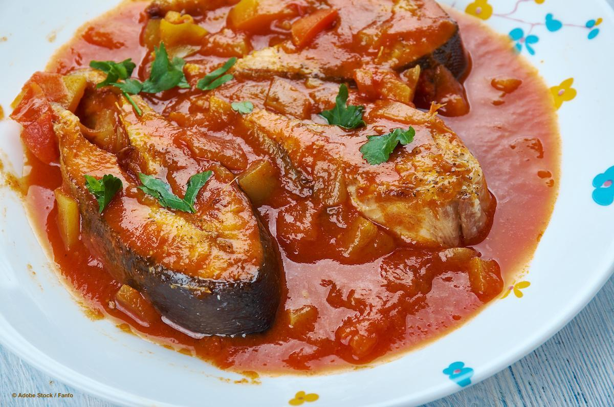
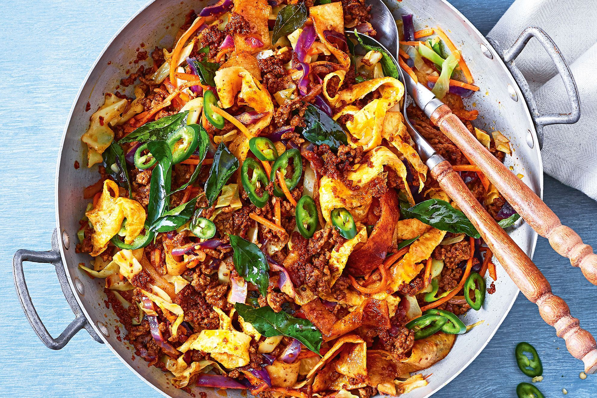
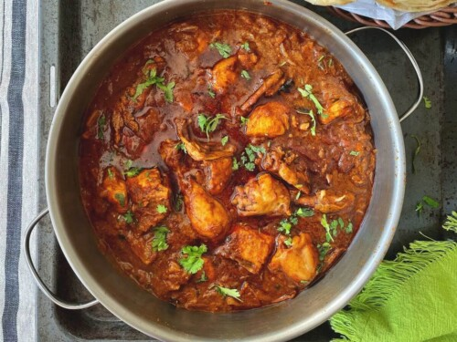
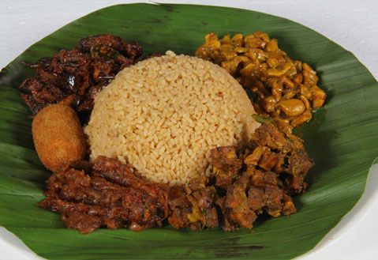

The Best Sri Lankan Dishes And Recipes

As you’d expect from an island in the Indian Ocean,
seafood plays an important role Sri Lankan cuisine.
Fish ambul thiyal (sour fish curry) is one of
the most beloved varieties of the many different
fish curries available.
The fish – usually something large and firm, such as
tuna – is cut into cubes.

Over the traffic and noise at a Sri Lankan market,
you’ll likely hear the clanking of metal on
metal and know kottu isn’t far away. Kottu is
Sri Lanka’s hamburger everybody’s favorite go-to
fast food when craving something
tasty and greasy.It resembles fried rice, except
instead of rice,it’s made with godamba roti

Simple to make, chicken curry is a common household
dish in Sri Lanka. There are many variations
depending on region and taste preferences.Spices
like fennel seeds, cardamom, cloves and cinnamon
sticks are tempered in hot oil before being combined
with chicken and spices like chili powder, curry
powder, turmeric, pandan leaves, lemongrass
and curry leaves.

Sri Lanka has been influenced by a diversity
of cultures and one of the most evident
is the Dutch Burgher community. Lamprais, a
word that combines the two Dutch words for
“lump” and “rice,” is a combination of meat,
rice and sambol chili sauce, wrapped into a banana
leaf packet and steamed.